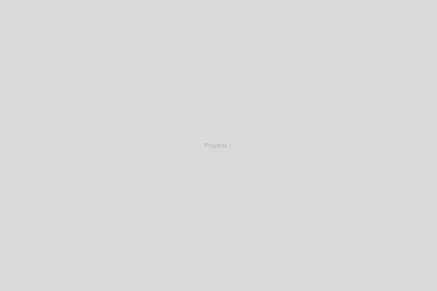

Moluscos, clase gastrópoda
Moluscos es una instalación inmersiva e interactiva desarrollada en grupo a partir de una investigación sobre gastrópodos realizada en el Museo de Ciencias Naturales de Buenos Aires.

Moluscos es una instalación inmersiva e interactiva desarrollada en grupo a partir de una investigación sobre gastrópodos realizada en el Museo de Ciencias Naturales de Buenos Aires.